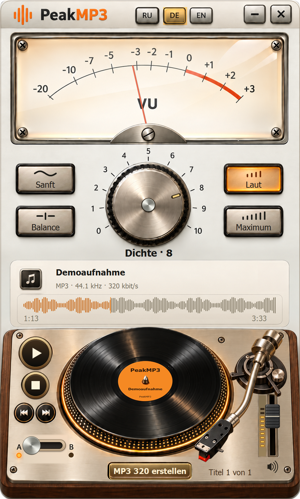

Mit dem Original arbeiten
AAC, MP3, WAV oder FLAC öffnen. Von YouTube erhält das Programm Original-AAC.
PeakMP3 · 0.16.0 Preview
Analoger Charakter. Mit dem Original vergleichen und deine MP3 speichern.
Gemeinsames Setup mit YouTube Downloader

AAC, MP3, WAV oder FLAC öffnen. Von YouTube erhält das Programm Original-AAC.
Dichteregler und A/B-Schalter helfen bei der Wahl der passenden Einstellung.
Der Speicherdialog beginnt auf dem Desktop. Du kannst einen anderen Ordner wählen.
Drei Musikausschnitte. Titel wählen, am Plattenspieler Play drücken und den PeakMP3-Regler drehen.
Regler, Presets, A/B und Transport ausprobieren. Auf der Wellenform springen, rechts die Lautstärke einstellen.
Dichtestufen 0–10 wurden mit PeakMP3 0.16.0 vorbereitet. A ist der ursprüngliche Ausschnitt, B die gewählte Bearbeitung. Eigene Dateien werden nicht im Browser verarbeitet.
24-Sekunden-Ausschnitte: Schnitt, PeakMP3-Bearbeitung und MP3-Kodierung. Die Musiklizenz gilt unabhängig von den Programmbedingungen.
Regler, Presets, A/B und Transport ausprobieren. Auf der Wellenform springen, rechts die Lautstärke einstellen.